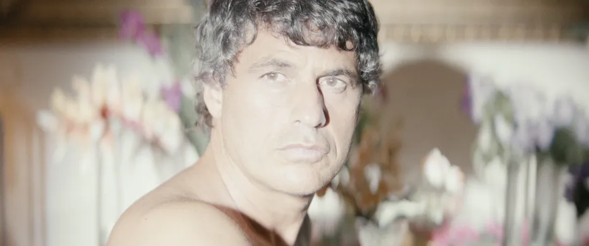
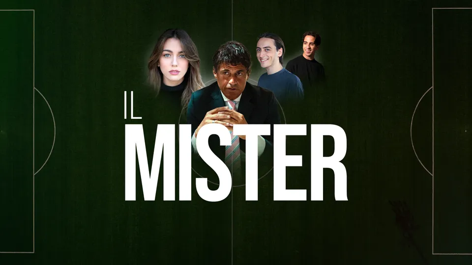
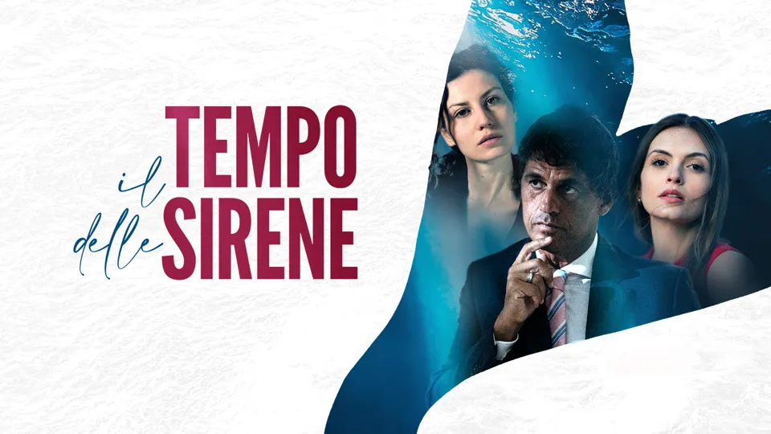
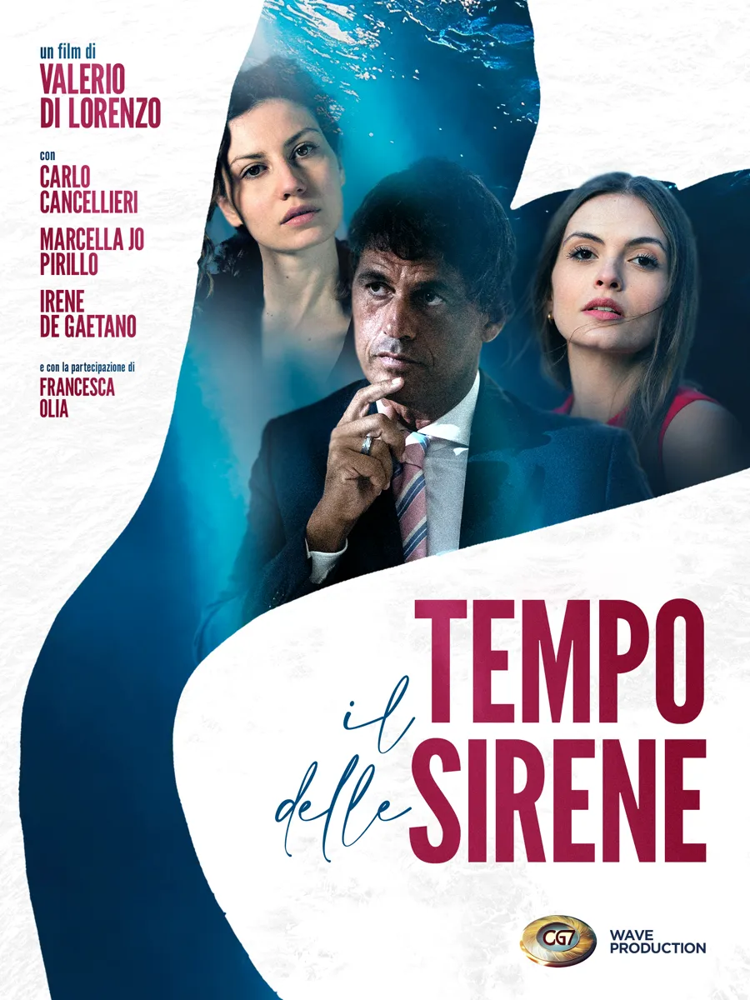

In fiore


- Un cortometraggio di
- Carlo Cancellieri
- Con
- Beatrice Bartoni, Claudia Tosoni, Matilde Contarin, Francesco Maria Dominedò
Il Mister

- Regia
- Elisa Marrai
- Scritto da
- Stefano Romano
- Con
- Carlo Cancellieri, Chiara Vinci, Alessandro Corte, Enrico Manes-Gravina
Il tempo delle sirene


- Un film di
- Valerio Di Lorenzo
- Con
- Carlo Cancellieri, Marcella Jo Pirillo, Irene De Gaetano
- Con la partecipazione di
- Francesca Olia
Altri lavori
La stella di Roma e quattro spettacoli teatrali.


Domande frequenti
Che cos'è Wave Production?
Wave Production, sigla CG7, è una società di produzione di cortometraggi che porta in scena anche film e spettacoli teatrali.
Dove ha sede Wave Production?
La sede legale di CG7 Wave Production S.r.l. è a Roma.
Quali lavori ha realizzato Wave Production?
Il cortometraggio In fiore, i film Il Mister, Il tempo delle sirene e La stella di Roma, e gli spettacoli teatrali Dei delitti & Co, Due volte Natale, La cena aziendale e Capodanno in giallo noir.
Come si contatta Wave Production?
Scrivendo sul profilo Instagram @waveproduction___.